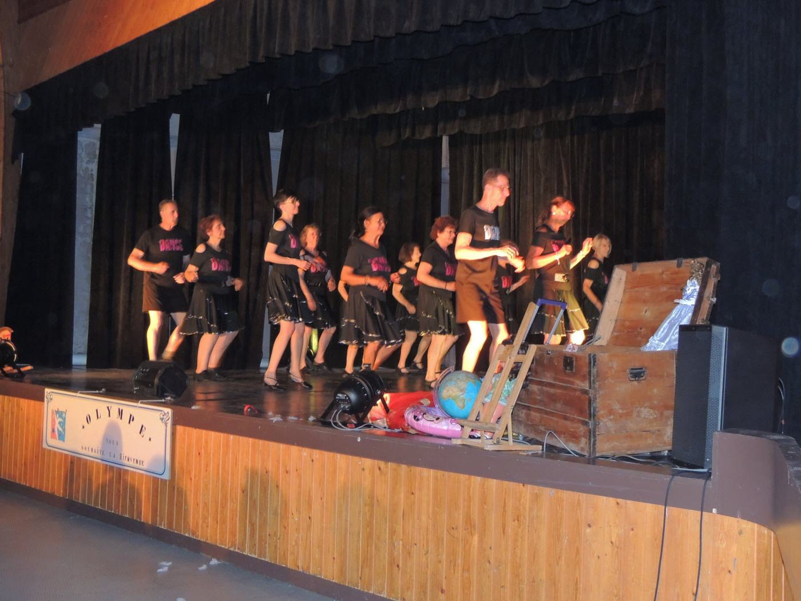

L’association
Quarante-deux ans de danse partagée, portée par une fondatrice passionnée et une équipe de bénévoles.
Une association de danse pour tous, au cœur de Plombières
Olympe a pour objet de promouvoir, d’exercer et de développer la pratique d’activités artistiques, chorégraphiques et de détente pour tout public.
Association loi 1901 basée à Plombières-lès-Dijon, en Côte-d’Or, Olympe accueille les enfants dès 4 ans, les adolescents et les adultes autour de la danse — classique, modern’jazz, hip-hop, fusion, danses du monde, danse en ligne — mais aussi du yoga, du pilates et de la gym détente.
Son grand rendez-vous : le gala annuel, chaque mois de juin, à la salle des fêtes Eugène Vadot.

Gala « La malle aux souvenirs », 20 juin 2026 · Photo : association Olympe
Ce qui nous porte, sur scène comme en coulisses
Le plaisir avant tout
On danse parce que ça fait du bien : à 4 ans comme à 70, le corps et le cœur se mettent en mouvement.
Le lien
Élèves, parents, monitrices, bénévoles : Olympe est d’abord un lieu où l’on se retrouve et où l’on se connaît.
Le dépassement
Chaque saison se prépare pour monter sur scène au gala. Se surpasser, ensemble, avec bienveillance.
L’ouverture
Classique, hip-hop, danses du monde, fusion, pilates : toutes les envies et tous les rythmes ont leur place.
De huit fillettes à des centaines de souvenirs
Quarante-deux ans de galas, de répétitions, de fous rires et de costumes cousus main.
À compléter par l’associationSouvenirs, anecdotes, chiffres (nombre d’adhérents, de monitrices…) : ce texte d’attente peut être enrichi à tout moment.
Naissance d’Olympe
L’association est créée sous le nom « USP Danse », avec une seule activité et huit fillettes de 8 ans. Martine Agostini la fonde en marge de sa carrière dans l’administration militaire.
Première distinction
Martine Agostini est décorée de la médaille de la Jeunesse et des Sports et de l’Engagement associatif.
30 ans et un gala « Cabaret »
Vingt chorégraphies enchaînées pendant trois heures à la salle Eugène-Vadot, pour fêter les trente ans de l’association.
Nouvelle reconnaissance
La médaille de la Jeunesse, des Sports et de l’Engagement associatif vient de nouveau saluer l’engagement de la présidente.
« L’aventure humaine »
Le gala du samedi 18 juin met en scène le thème de l’aventure humaine.
40e gala, 40 ans de présidence
Olympe fête quarante ans d’une même présidente et un 40e gala réussi.
« La malle aux souvenirs »
Le 42e gala, le 20 juin, ouvre la malle des souvenirs devant une salle des fêtes comble de familles et d’amis.
Martine Agostini, fondatrice et présidente
« J’aime la danse depuis l’enfance mais petite, je n’ai jamais pu la pratiquer. Ma mère m’avait dit qu’une fois adulte, je paierais mes cours. C’est ce que j’ai fait à 25 ans en rejoignant une école de danse classique à Chenôve. Ce fut une révélation. »
Martine Agostini, propos recueillis par Le Bien Public, 3 juin 2024
Plombiéroise d’origine, elle a dansé sept ans dans un corps de ballet, pratiqué la danse classique, la mazurka, la tarentelle, les danses indienne et égyptienne… et même la country line dance ! Elle préside Olympe depuis plus de quarante ans, en parallèle d’une carrière dans l’administration militaire.
Mot de bienvenue — texte d’attenteMartine, ce cadre est à vous : quelques lignes de bienvenue à votre image pourront remplacer ce texte.
Celles et ceux qui font vivre Olympe toute l’année
Organisation de l’association, préparation du gala, accueil des familles : le conseil d’administration accompagne Martine Agostini avec un travail considérable, tout au long de la saison.
Martine Agostini
Fondatrice et présidenteNom à renseigner
Vice-présidente / Vice-présidentNom à renseigner
SecrétaireNom à renseigner
Trésorière / Trésorier— Martine Agostini, fondatrice et présidente, et le Conseil d’Administration d’Olympe
Envie de donner un coup de main ? Olympe est toujours à la recherche de bonnes volontés pour étoffer son équipe de bénévoles. Proposer mon aide →
Envie de danser avec nous ?
Une séance d’essai est possible sur simple prise de contact avec Martine Agostini. Venez comme vous êtes : le plaisir de bouger fait le reste.